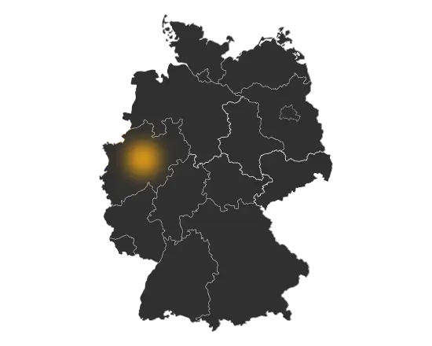

FAMILIENLINIE 01
Richwin
Region
Holzwickede / Dortmund, Westfalen
Zeitraum
ca. 1735 bis heute
Die Linie Richwin ist eine genealogisch belegte Familienlinie, deren Ursprung im westfälischen Raum liegt. Über zahlreiche Kirchenbücher, Standesregister und historische Quellen lässt sich ihre Entwicklung über viele Generationen nachvollziehen.
Die Familie war überwiegend im Raum Dortmund, Holzwickede und den umliegenden Gemeinden ansässig und entwickelte sich im Laufe der Zeit in verschiedene Zweige.
Mehr über die Linie Richwin